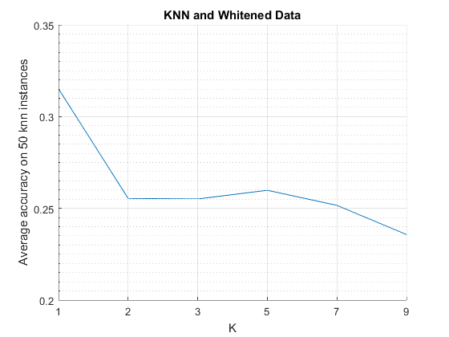

Task 3
Problem: test the K-nn algorithm using all the dimensions available, but computing the distances on the whitened data.
Estimated time 21 seconds
Contents
Loading Data
We import the data, then we split it in observations and classification.
tic;
data = importdata('semeion.data');
classification = data(:,end);
data = data(:,1:end-1);
Whitening
data = whitening(data);
K-NN Classification
We perform classification with six different k values. Each classification instance accuracy is the average of 50 instances trained according to the problem. (The number of instances is increased since it is pretty fast)
accuracy = []; avg_accuracies = []; for k = [1 2 3:2:9] % 50 different training and test sets for j = 1:50 % Randomizing training set [training_set, test_set] = randomsamples(10,[data,classification]); mdl = fitcknn(training_set(:,1:256), training_set(:,end),'NumNeighbors',k); % Get the prediction prediction = predict(mdl, test_set(:,1:256)); accuracy =[accuracy ; sum(prediction == test_set(:,end))/size(test_set,1)]; end % Average accuracy of the 50 run avg = mean(accuracy); avg_accuracies =[avg_accuracies , avg]; accuracy = []; fprintf('k = %d, PC = %d, Avg = %f \n ',k,i, avg); end
k = 1, PC = 1, Avg = 0.315151 k = 2, PC = 1, Avg = 0.255419 k = 3, PC = 1, Avg = 0.255124 k = 5, PC = 1, Avg = 0.259853 k = 7, PC = 1, Avg = 0.251628 k = 9, PC = 1, Avg = 0.235727
Plot
figure; hold on; for i = 1: size(avg_accuracies,1) plot(avg_accuracies(i,:)); end hold off; grid on; axis([1 6 0.2 0.35]); set(gca, 'xtick', [1 2 3 4 5 6] ); set(gca, 'xticklabel', [1 2 3 5 7 9] ); xlabel('K'); ylabel('Average accuracy on 50 knn instances'); set(gca, 'yminortick','on'); set(gca, 'yminorgrid','on'); title('KNN and Whitened Data'); toc;
Elapsed time is 20.490574 seconds.